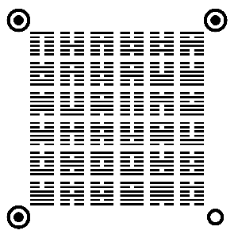
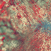
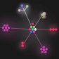
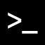

<!DOCTYPE html><html lang="zh-CN"><meta charset="utf-8"><meta name="viewport" content="width=device-width,initial-scale=1,minimum-scale=1"><link rel="manifest" href="/site.webmanifest"><link rel="stylesheet" type="text/css" href="static/css/style.css"><title>程序员 | FUUN.FUN</title><meta name="generator" content="Jekyll v3.8.7"><meta property="og:title" content="程序员"><meta property="og:locale" content="zh_CN"><meta name="description" content="奇趣网站收藏家"><meta property="og:description" content="奇趣网站收藏家"><link rel="canonical" href=""><meta property="og:url" content="https://fuun.fun/developer.html"><meta property="og:site_name" content="FUUN.FUN"><script type="application/ld+json"> {"@type":"WebPage","url":"https://fuun.fun/developer.html","headline":"程序员","description":"奇趣网站收藏家","@context":"https://schema.org"}</script><meta property="og:image" content="https://i.loli.net/2020/05/28/Ue7AQWfcRYiHdXF.png"><meta property="og:image:width" content="1090"><meta property="og:image:height" content="570"><meta name="twitter:card" content="summary_large_image"><script async="" src="static/js/js-UA-93920714-4.js"></script><script>function gtag(){dataLayer.push(arguments)}window.dataLayer=window.dataLayer||[],gtag("js",new Date),gtag("config","UA-93920714-4")</script><header><div class="logo"> <a href="index.html"></a></div><input type="checkbox" checked="true" id="antzone"> <label for="antzone"></label> <nav><ul><li><a href="index.html">全部(66)</a></li><li><div class="icon" style="background-color:#316af1"> <svg xmlns="http://www.w3.org/2000/svg" width="18" height="18" viewbox="0 0 24 24" fill="none" stroke="#fff" stroke-width="2" stroke-linecap="round" stroke-linejoin="round" class="feather feather-globe"><circle cx="12" cy="12" r="10"></circle><line x1="2" y1="12" x2="22" y2="12"></line><path d="M12 2a15.3 15.3 0 0 1 4 10 15.3 15.3 0 0 1-4 10 15.3 15.3 0 0 1-4-10 15.3 15.3 0 0 1 4-10z"></path></svg></div><a href="world.html">世界</a></li><li><div class="icon" style="background-color:#8ec90e"> <svg xmlns="http://www.w3.org/2000/svg" width="18" height="18" viewbox="0 0 24 24" fill="none" stroke="#fff" stroke-width="2" stroke-linecap="round" stroke-linejoin="round" class="feather feather-book"><path d="M4 19.5A2.5 2.5 0 0 1 6.5 17H20"></path><path d="M6.5 2H20v20H6.5A2.5 2.5 0 0 1 4 19.5v-15A2.5 2.5 0 0 1 6.5 2z"></path></svg></div><a href="history.html">历史</a></li><li><div class="icon" style="background-color:#02aaff"> <svg xmlns="http://www.w3.org/2000/svg" width="18" height="18" viewbox="0 0 24 24" fill="none" stroke="#fff" stroke-width="2" stroke-linecap="round" stroke-linejoin="round" class="feather feather-target"><circle cx="12" cy="12" r="10"></circle><circle cx="12" cy="12" r="6"></circle><circle cx="12" cy="12" r="2"></circle></svg></div><a href="game.html">游戏</a></li><li><div class="icon" style="background-color:#ffb547"> <svg xmlns="http://www.w3.org/2000/svg" width="18" height="18" viewbox="0 0 24 24" fill="none" stroke="#fff" stroke-width="2" stroke-linecap="round" stroke-linejoin="round" class="feather feather-zap"><polygon points="13 2 3 14 12 14 11 22 21 10 12 10 13 2"></polygon></svg></div><a href="creativity.html">创意</a></li><li><div class="icon" style="background-color:#ff4242"> <svg xmlns="http://www.w3.org/2000/svg" width="18" height="18" viewbox="0 0 24 24" fill="none" stroke="#fff" stroke-width="2" stroke-linecap="round" stroke-linejoin="round" class="feather feather-smile"><circle cx="12" cy="12" r="10"></circle><path d="M8 14s1.5 2 4 2 4-2 4-2"></path><line x1="9" y1="9" x2="9.01" y2="9"></line><line x1="15" y1="9" x2="15.01" y2="9"></line></svg></div><a href="shadiao.html">沙雕</a></li><li><div class="icon" style="background-color:#23c4a4"> <svg xmlns="http://www.w3.org/2000/svg" width="18" height="18" viewbox="0 0 24 24" fill="none" stroke="#fff" stroke-width="2" stroke-linecap="round" stroke-linejoin="round" class="feather feather-terminal"><polyline points="4 17 10 11 4 5"></polyline><line x1="12" y1="19" x2="20" y2="19"></line></svg></div><a href="" class="selected">程序员</a></li></ul></nav><div class="footer"><div class="rights"><p class="a_animation">Made by <a href="javascript:;" target="_blank">@Bakumon</a></p></div></div></header><section class="main"><div class="link_item"><div class="content"> <div class="title a_animation"> <a href="javascript:;" target="_blank">开源人物肖像 <svg xmlns="http://www.w3.org/2000/svg" width="18" height="18" viewbox="0 0 24 24" fill="none" stroke="#000000" stroke-width="2" stroke-linecap="round" stroke-linejoin="round"><g fill="none" fill-rule="evenodd"><path d="M18 14v5a2 2 0 0 1-2 2H5a2 2 0 0 1-2-2V8c0-1.1.9-2 2-2h5M15 3h6v6M10 14 20.2 3.8"></path></g></svg></a></div><div class="description">那些推动计算机革命的开源程序员的肖像</div><div class="category" style="background-color:#23c4a4;color:#23c4a4"> 程序员</div></div></div><div class="link_item"><div class="content"> <div class="title a_animation"> <a href="javascript:;" target="_blank">卦象二维码 <svg xmlns="http://www.w3.org/2000/svg" width="18" height="18" viewbox="0 0 24 24" fill="none" stroke="#000000" stroke-width="2" stroke-linecap="round" stroke-linejoin="round"><g fill="none" fill-rule="evenodd"><path d="M18 14v5a2 2 0 0 1-2 2H5a2 2 0 0 1-2-2V8c0-1.1.9-2 2-2h5M15 3h6v6M10 14 20.2 3.8"></path></g></svg></a></div><div class="description">用 《易经》的六十四卦象来生成二维码，据说更快</div><div class="category" style="background-color:#23c4a4;color:#23c4a4"> 程序员</div></div></div><div class="link_item"><div class="content"> <div class="title a_animation"> <a href="javascript:;" target="_blank">漫威 API <svg xmlns="http://www.w3.org/2000/svg" width="18" height="18" viewbox="0 0 24 24" fill="none" stroke="#000000" stroke-width="2" stroke-linecap="round" stroke-linejoin="round"><g fill="none" fill-rule="evenodd"><path d="M18 14v5a2 2 0 0 1-2 2H5a2 2 0 0 1-2-2V8c0-1.1.9-2 2-2h5M15 3h6v6M10 14 20.2 3.8"></path></g></svg></a></div><div class="description">漫威提供的 API，获取英雄信息和故事等</div><div class="category" style="background-color:#23c4a4;color:#23c4a4"> 程序员</div></div></div><div class="link_item"><div class="content"> <div class="title a_animation"> <a href="javascript:;" target="_blank">图片粒子效果 <svg xmlns="http://www.w3.org/2000/svg" width="18" height="18" viewbox="0 0 24 24" fill="none" stroke="#000000" stroke-width="2" stroke-linecap="round" stroke-linejoin="round"><g fill="none" fill-rule="evenodd"><path d="M18 14v5a2 2 0 0 1-2 2H5a2 2 0 0 1-2-2V8c0-1.1.9-2 2-2h5M15 3h6v6M10 14 20.2 3.8"></path></g></svg></a></div><div class="description">非常炫酷的图片变换粒子效果</div><div class="category" style="background-color:#23c4a4;color:#23c4a4"> 程序员</div></div></div><div class="link_item"><div class="content"> <div class="title a_animation"> <a href="javascript:;" target="_blank">Image Charts <svg xmlns="http://www.w3.org/2000/svg" width="18" height="18" viewbox="0 0 24 24" fill="none" stroke="#000000" stroke-width="2" stroke-linecap="round" stroke-linejoin="round"><g fill="none" fill-rule="evenodd"><path d="M18 14v5a2 2 0 0 1-2 2H5a2 2 0 0 1-2-2V8c0-1.1.9-2 2-2h5M15 3h6v6M10 14 20.2 3.8"></path></g></svg></a></div><div class="description">一个链接就是一个图表</div><div class="category" style="background-color:#23c4a4;color:#23c4a4"> 程序员</div></div></div><div class="link_item"><div class="content"> <div class="title a_animation"> <a href="javascript:;" target="_blank">Gource <svg xmlns="http://www.w3.org/2000/svg" width="18" height="18" viewbox="0 0 24 24" fill="none" stroke="#000000" stroke-width="2" stroke-linecap="round" stroke-linejoin="round"><g fill="none" fill-rule="evenodd"><path d="M18 14v5a2 2 0 0 1-2 2H5a2 2 0 0 1-2-2V8c0-1.1.9-2 2-2h5M15 3h6v6M10 14 20.2 3.8"></path></g></svg></a></div><div class="description">Gource 可以把代码仓库的提交历史变成视频。你的每一次提交都能让视频中的小人去树上修剪一次枝叶。</div><div class="category" style="background-color:#23c4a4;color:#23c4a4"> 程序员</div></div></div><div class="link_item"><div class="content"> <div class="title a_animation"> <a href="javascript:;" target="_blank">CSS 油画 <svg xmlns="http://www.w3.org/2000/svg" width="18" height="18" viewbox="0 0 24 24" fill="none" stroke="#000000" stroke-width="2" stroke-linecap="round" stroke-linejoin="round"><g fill="none" fill-rule="evenodd"><path d="M18 14v5a2 2 0 0 1-2 2H5a2 2 0 0 1-2-2V8c0-1.1.9-2 2-2h5M15 3h6v6M10 14 20.2 3.8"></path></g></svg></a></div><div class="description">CSS 代码“画”的油画（<a href="javascript:;" target="_blank">https://github.com/cyanharlow 查看更多</a>）</div><div class="category" style="background-color:#23c4a4;color:#23c4a4"> 程序员</div></div></div><div class="link_item"><div class="content"> <div class="title a_animation"> <a href="javascript:;" target="_blank">CMD.TO <svg xmlns="http://www.w3.org/2000/svg" width="18" height="18" viewbox="0 0 24 24" fill="none" stroke="#000000" stroke-width="2" stroke-linecap="round" stroke-linejoin="round"><g fill="none" fill-rule="evenodd"><path d="M18 14v5a2 2 0 0 1-2 2H5a2 2 0 0 1-2-2V8c0-1.1.9-2 2-2h5M15 3h6v6M10 14 20.2 3.8"></path></g></svg></a></div><div class="description">娱乐型的在线命令行，可以听 FM、查看新闻、打印有趣的文本等</div><div class="category" style="background-color:#23c4a4;color:#23c4a4"> 程序员</div></div></div><div class="link_item"><div class="content"> <div class="title a_animation"> <a href="javascript:;" target="_blank">零宽字符隐藏加密 <svg xmlns="http://www.w3.org/2000/svg" width="18" height="18" viewbox="0 0 24 24" fill="none" stroke="#000000" stroke-width="2" stroke-linecap="round" stroke-linejoin="round"><g fill="none" fill-rule="evenodd"><path d="M18 14v5a2 2 0 0 1-2 2H5a2 2 0 0 1-2-2V8c0-1.1.9-2 2-2h5M15 3h6v6M10 14 20.2 3.8"></path></g></svg></a></div><div class="description">利用零宽字符隐藏加密字符</div><div class="category" style="background-color:#23c4a4;color:#23c4a4"> 程序员</div></div></div><div class="link_item"><div class="content"> <div class="title a_animation"> <a href="share.html">我要分享</a></div><div class="description">把有趣的网站分享给大家呗~(●'◡'●)</div></div></div></section><script src="static/js/3.0.js" type="module" defer="" integrity="sha384-OeDn4XE77tdHo8pGtE1apMPmAipjoxUQ++eeJa6EtJCfHlvijigWiJpD7VDPWXV1"></script></html>